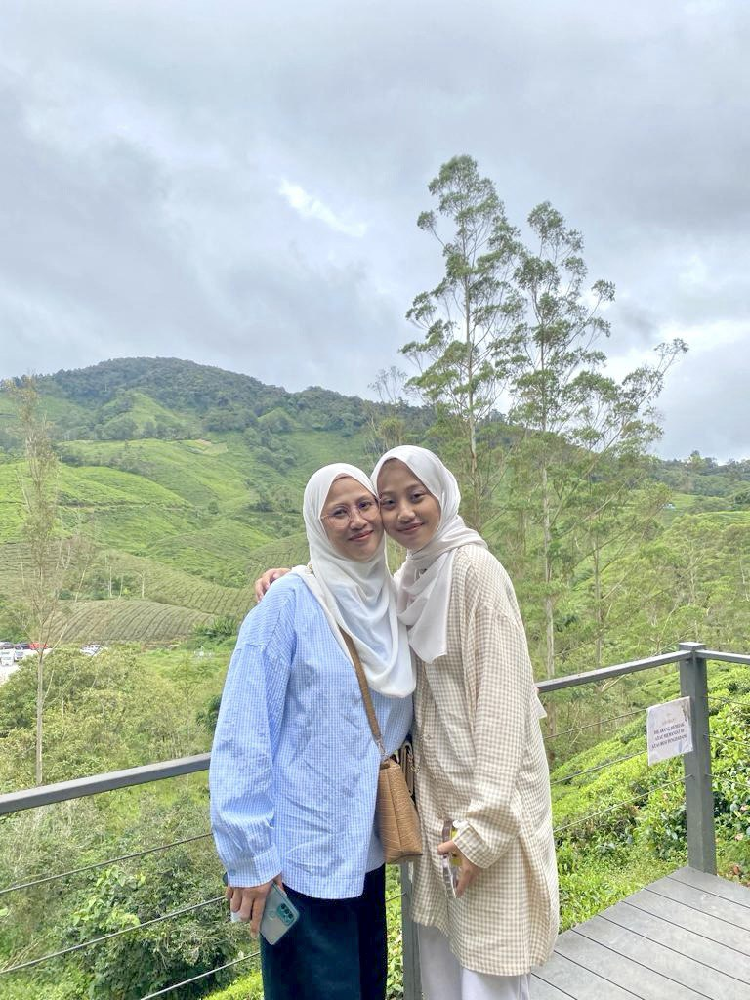
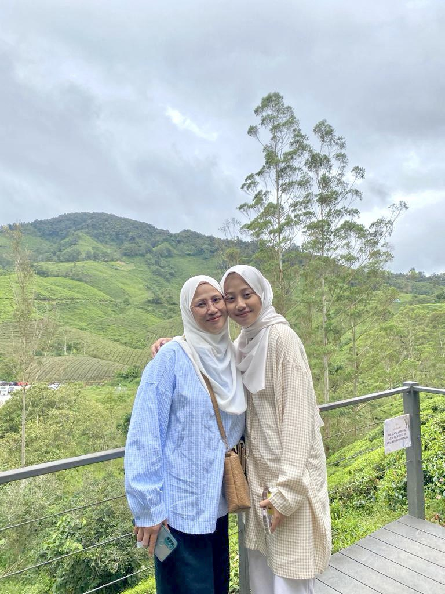

My Family
I come from a family of six, including my parents and four siblings. I am the youngest child in the family. All of my siblings are married and currently working, while I am the only one who is still single and continuing my studies. My parents have always been supportive and caring, and my siblings often guide and encourage me based on their own life experiences. Growing up in a close-knit and loving family has shaped me into a responsible and motivated person. Their success inspires me to work hard and achieve my own goals, so I can make them proud and give back to them in the future.

 
